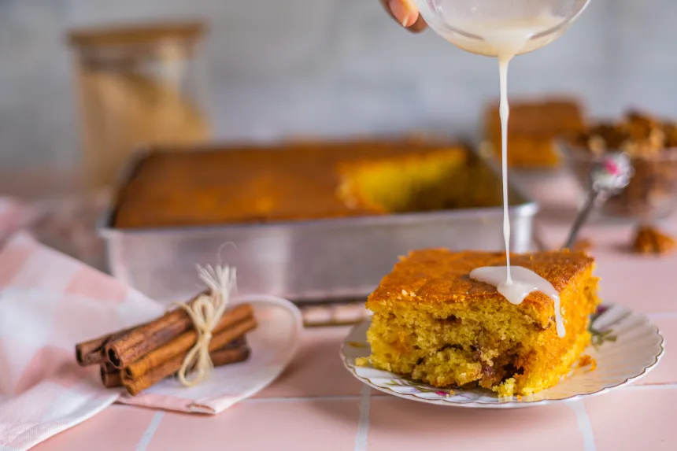

Honey Bun Cake
Inspired by: Winnie The Pooh

Description:
Made with honey straight out of Pooh Bear's honeypot, this cake is perfect for tea time.
Ready in: 65 mins
Serves: 12
Ingredients:
- 1 packet (18 ounce) yellow cake mix
- 2/3 cup vegetable oil
- 4 eggs
- 1 container (8 ounce) sour cream
- 1 cup packed brown sugar
- 1/3 cup chopped pecans
- 2 teaspoons ground cinnamon
- 1 cup powdered sugar
- 1 tablespoon milk
- 1 teaspoon vanilla
Directions:
- Add cake mix, oil, eggs, and sour cream to a large mixing bowl.
- Beat with an electric mixer on medium speed until well mixed.
- Spread half of the batter into a greased 13x9 inch baking pan.
- In a smaller bowl, add the brown sugar, pecans, and cinnamon; stir to mix.
- Sprinkle mixture evenly over the batter.
- Spread the remaining batter over the pecan mixture.
- Bake at 350 degrees for about 45 minutes or until golden brown.
- In a bowl, stir the powdered sugar, milk, and vanilla until it is thin enough to spread.
- Take a toothpick and prick the surface of the warm cake several times.
- Spread the sugar glaze over the cake.
- Let cool for 60 minutes.